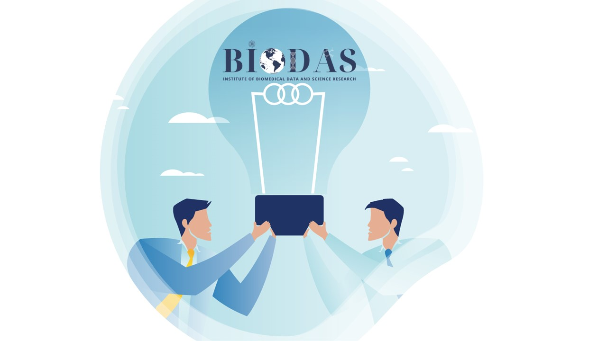

🧬 BIODAS — Institute of Biomedical Data and Science Research
BIODAS là đơn vị nghiên cứu chuyên sâu trong lĩnh vực y sinh há»c và khoa há»c dữ liệu tại Việt Nam.
Sứ mệnh của chúng tôi là kết nối bệnh viện, viện nghiên cứu, các đơn vị y tế công–tư trong và ngoà i nước để thúc đẩy nghiên cứu y há»c, phát triển công nghệ và nâng cao chất lượng điá»u trị cho cộng đồng.
📠Äà o tạo & Nâng cao năng lực
TipĐà o tạo & Nâng cao năng lực
- Thu tháºp & phân tÃch dữ liệu y sinh: Excel, SPSS, R, trực quan hóa dữ liệu (data visualization).
- Phương pháp nghiên cứu lâm sà ng: thiết kế nghiên cứu, quy trình nghiên cứu, viết bản thảo khoa há»c.
- Hội thảo/Webinar miá»…n phà vá» nghiên cứu y sinh & phân tÃch dữ liệu.
- Mentoring trực tiếp từ các chuyên gia trong nước và quốc tế.
🔬 Nghiên cứu khoa há»c
NoteNghiên cứu khoa há»c
- Hợp tác với bệnh viện, viện nghiên cứu, trường đại há»c trong các mảng: nghiên cứu lâm sà ng, y tế công cộng, khảo sát cộng đồng.
- Thực hiện báo cáo nghiên cứu, công bố khoa há»c, và báo cáo nghiên cứu thị trường y tế.
- Đồng hà nh thu tháºp & xá» lý dữ liệu thực địa, hỗ trợ tuyển chá»n bệnh nhân theo kế hoạch nghiên cứu.
🧊 Biobank & Dữ liệu y sinh
TipBiobank & Dữ liệu y sinh
- Xây dựng ngân hà ng mẫu sinh há»c (biobank) gắn dữ liệu lâm sà ng, bệnh há»c, thông tin lối sống và dữ liệu liên kết.
- Quy trình được phê duyệt bởi hội đồng đạo đức, tuân thủ tiêu chuẩn trong nước và quốc tế.
🚀 Định hướng phát triển
NoteĐịnh hướng phát triển
- Khoa há»c • Kết nối • Vì cộng đồng
- Mở rộng hệ sinh thái há»c thuáºt – thực hà nh: kết hợp Ä‘Ã o tạo, nghiên cứu và dữ liệu.
- Tăng cường hợp tác với các đơn vị công–tư trong và ngoà i nước.
- Nâng cao năng lực nghiên cứu tại Việt Nam, góp phần khẳng định vị thế quốc gia trên bản đồ khoa há»c toà n cầu.
📩 Liên hệ
Email: contact@biodas.net
BIODAS — Khoa há»c • Kết nối • Vì cộng đồng